Sabor principal
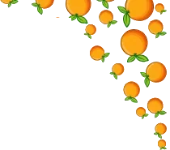
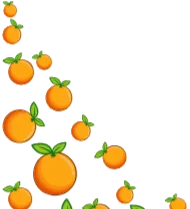
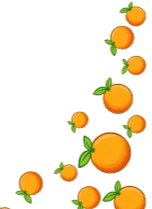
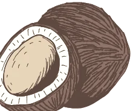
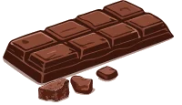
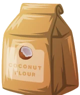
Alfajor Afrika
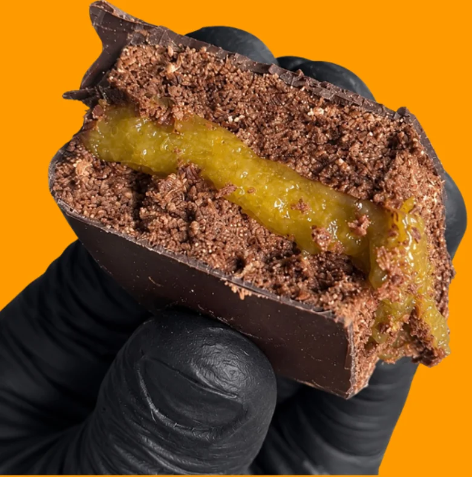
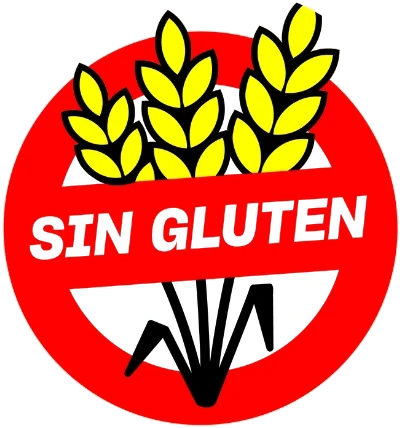
Innovación, Sabor y
Desarrollo Tecnológico
¿Qué es Afrika?
Es un alfajor artesanal sin TACC, con alto contenido de fibra y fortificado con vitamina C.
Sus sabores principales son harina de coco, cacao amargo, cubierto con chocolate semi amargo relleno de mousse de naranja.
Pensado para personas con celiaquía y personas que quieren innovar sabores.
Sus características
- Artesanal
- Sin TACC
- Alto contenido de fibra
- Fortificado con vitamina C
Sus sabores
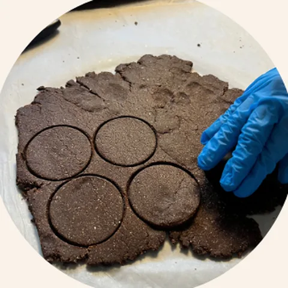
Sabor principal
Cacao amargo
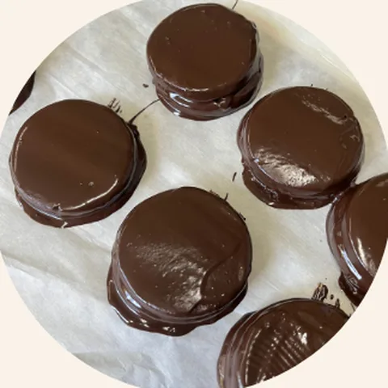
Cobertura
Chocolate semi amargo
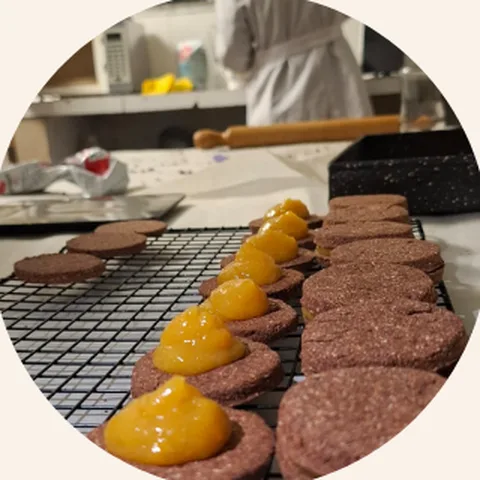
Relleno
Mousse de naranja
¿Para quién es?
Personas con celiaquía
Un alfajor pensado para ellas.
Quienes quieren innovar sabores
Una combinación distinta de cacao, coco y naranja.
Objetivo
El objetivo de nuestro producto fue crear un alfajor innovador y atractivo para el consumidor principalmente para personas con la enfermedad de celiaquia y que tenga un valor nutricional extra e incorporar nuestro apendizaje
- Innovador y atractivo para el consumidor
- Pensado principalmente para personas con celiaquía
- Con un valor nutricional extra
- Que incorpore nuestro aprendizaje
Resultado
esperado
Obtener un Alfajor:
- 1Cítrico
- 2Chocolatoso
- 3Con harina de coco
- 4Alto en fibra
- 5Sin TACC
- 6Innovador y atractivo
Una propuesta diferente para disfrutar un nuevo sabor.
Procedimiento
Desarrollo tecnológico
De la selección de materias primas al producto final.
-
Paso 1
BPM
-
Paso 2
Pesaje
-
Paso 3
Masa
-
Paso 4
Relleno con la mousse
-
Paso 5
Cobertura
-
Paso 6
Producto final
Tocá cualquier foto para verla en grande.
Para saber más
Breve glosario de los términos que aparecen en el tríptico.
¿Qué significa TACC?
Es la sigla de Trigo, Avena, Cebada y Centeno, los cereales que contienen gluten. Un alimento “sin TACC” se elabora sin esos cereales ni sus derivados.
¿Qué es la celiaquía?
Es una enfermedad en la que el organismo no tolera el gluten. Por eso, las personas con celiaquía necesitan alimentos sin gluten, como Afrika.
¿Qué son las BPM?
Son las Buenas Prácticas de Manufactura: normas de higiene y de manejo de los alimentos que se aplican durante la elaboración. Por eso el procedimiento comienza con este paso.
¿Qué significa “fortificado con vitamina C”?
Que al producto se le agrega vitamina C como nutriente extra, para sumar valor nutricional.
Definiciones generales de referencia, incluidas para ampliar la información del tríptico.
Equipo
Proyecto realizado por
- Oviedo Celeste
- Santana Lorenzo
- Silva Juana
E.E.S. N°7 – E.E.S.T. N°3 Roberto Arlt
Compartí Afrika
Escaneá el código QR o compartí el enlace.